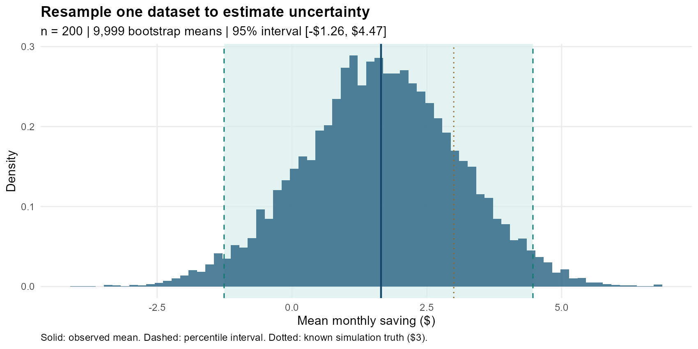
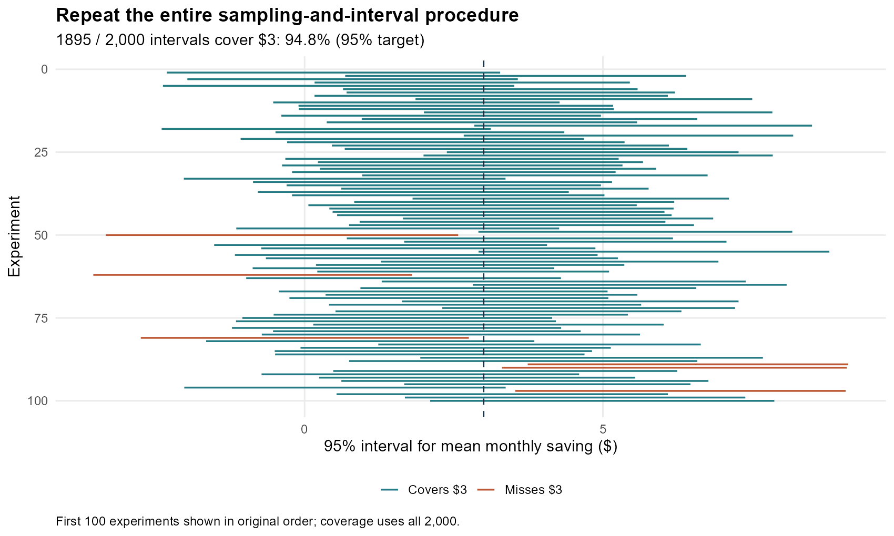
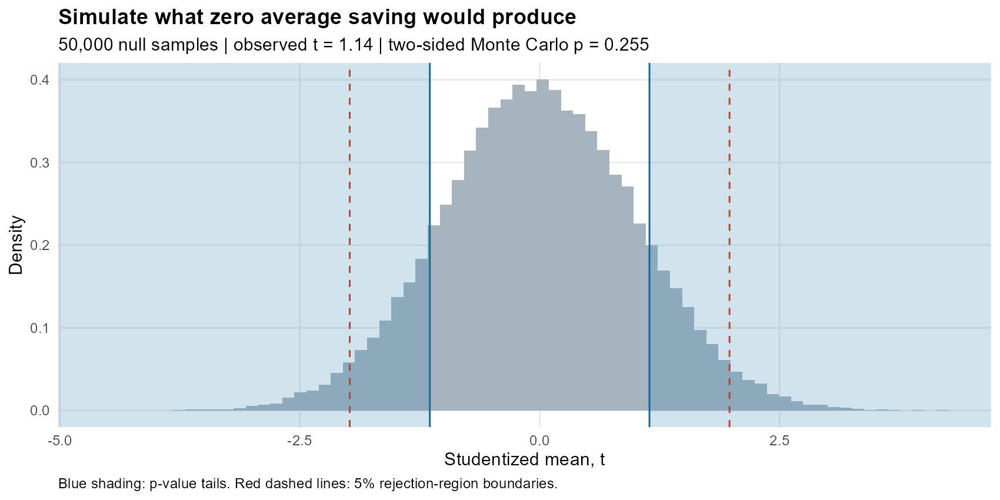

Does the Sample Show That the New Electricity Plan Saves Money?
Learning confidence intervals and hypothesis tests from a known-answer simulation
If a household sample shows lower bills under a different electricity plan, how can we tell whether the average saving is more than sampling noise? A positive estimate is useful, but its precision matters: another sample could produce a different answer. This simulation follows one question through a bootstrap interval, a coverage experiment and a hypothesis test.
All households here are simulated. Define saving as the old-plan bill minus the new-plan bill for the same monthly usage, including fees. Positive values favor switching. I generate independent savings from a normal distribution with a $3 population mean and $20 standard deviation. Negative savings are possible. Knowing the truth lets us check the methods; these are not estimates for an actual electricity provider.
What can one sample tell us?
The default sample contains 200 households, with mean saving $1.65. To estimate uncertainty, draw 200 observations with replacement from those same households and calculate their mean. Repeat 9,999 times. A household can appear several times in one resample, while another is absent. Figure 1 plots these means—not individual bills.
For a 95% percentile bootstrap interval, take the 2.5th and 97.5th percentiles of that distribution. Here the interval is -$1.26 to $4.47. It spans zero, so the positive estimate comes with uncertainty about the sign of average savings. The bootstrap procedure reuses available observations; it does not collect additional households.
Use the controls to change all three figures. A higher confidence level widens the interval and lowers the test’s significance threshold. Changing sample size changes the observations too: a larger sample generally improves precision, but its estimated mean can move.

Does 95% mean the interval usually catches the truth?
Now repeat the whole experiment, drawing 2,000 fresh household samples. For each, construct a new interval using 999 bootstrap resamples. This outer repetition differs from resampling the original dataset: it checks how the procedure behaves across datasets.
At the default settings, 1895 of 2,000 intervals contain $3: 94.8%, close to the 95% target. Figure 2 displays the first 100 in their original order. The population mean stays fixed while the intervals move. “95% confidence” describes repeated coverage, not a 95% probability assigned to the fixed mean after observing one interval.
Coverage is approximate. With 50 households, the same procedure covers 93.5% of the time in these simulations. More bootstrap draws can stabilize the calculation, but cannot supply information missing from a small household sample.

How surprising is this sample if average saving is zero?
Test zero population mean against a difference in either direction. Use , where is the sample standard deviation: the estimated saving measured in standard-error units. The default observed statistic is 1.14.
Generate 50,000 new samples under zero average saving, retaining the normal model and $20 spread, and calculate each t statistic. This is the null distribution in Figure 3. At a 5% significance level, reject when exceeds approximately 1.98: the two rejection tails together contain about 5% of null statistics.
The Monte Carlo p-value counts null statistics at least as far from zero as the observed one. With a small correction that prevents reporting zero, it is 0.255. We therefore do not reject zero at 5%. Changing the confidence level moves the rejection boundaries, while this sample’s p-value remains unchanged. Switch the shading to compare p-value tails with rejection regions. The p-value is not the probability that zero saving is true.

Takeaway
The default sample estimates positive savings but does not reject zero—even though its simulated population really saves $3 on average. Failing to reject is therefore not evidence that savings are absent. The interval shows the sample’s uncertainty; repeated coverage checks the interval procedure; the null simulation measures surprise under zero. None turns a population average into a promise for every household.
All draws, code and offline reproduction: README.